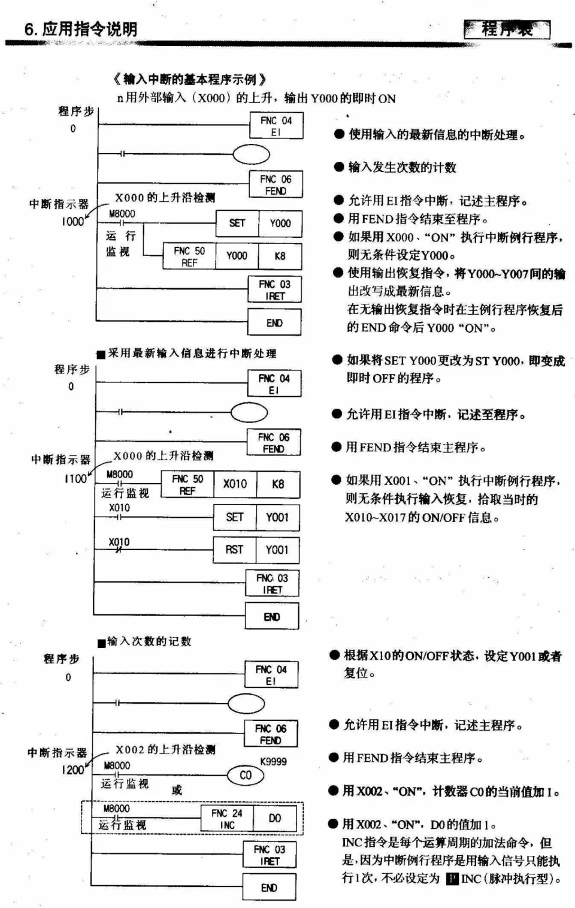
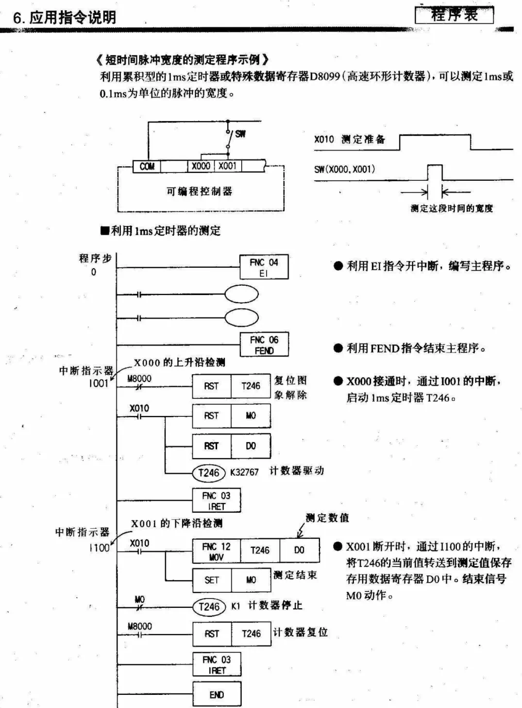

输入中断的延迟功能 指针编号 cj条件跳转 call子程序调用 中断急停告警显示程序 外部输入中断是-种硬件信号中断 短时脉冲捕捉
应急中断 《输入中断的基本程序示例》 n用外部输入（X000）的上升，输出Y000的即时ON 采用最新输入信息进行中断处理 输入次数的记数  ■捕捉短时间脉冲 ①利用外部中断功能,在一定时间内保持短时间脉冲 ＜短时间脉冲宽度的测定程序示例＞ 利用累积型的1ms定时器或特殊数据寄存器D8099 （高速环形计数器），可以测定1ms或 0.1ms为单位的脉冲的宽度。  ■ FNC71(HKY)指令的定时器中断处理 ［定时器中断的基本程序示例】 ■每隔10ms将数据加1，并同设定值进行比较。 ■ FNC67(RAMP)指令的定时器中断处理 利用10ms的定时器中断对下图所示的倾斜信号输出回路编程。利用计数器 的中断处理 [高速计敷器的中断处理】FX2N, FX2NC 利用高速计数器的当前值实施的中断。. 与FNC53( Q] HSCS)的比较置位指令并用，当高速计数器的当前值达到规定值时，执行 中断子程序。(中FNC532-8)